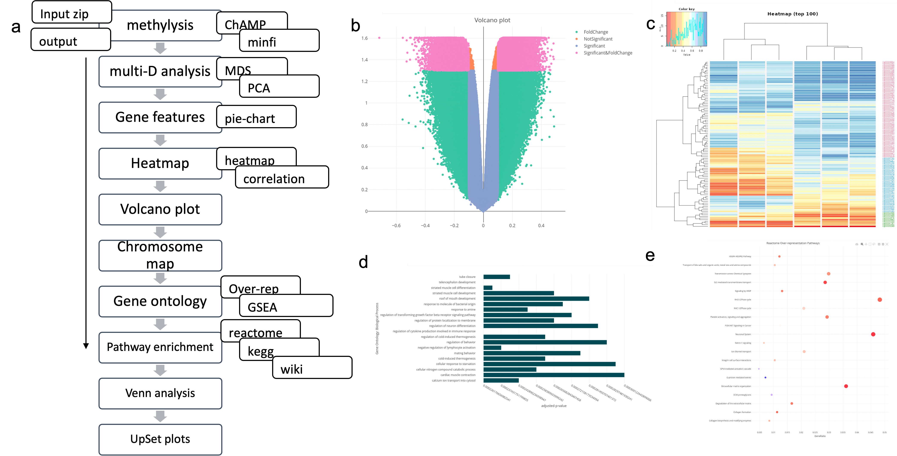

Welcome to methylR: DNA Methylation Data Analysis Pipeline
TO ALL OUR USERS, IF YOU ARE EXPERIENCING ANY TROUBLE WITH THE APP, BEFORE SENDING THE BUG REPORT, PLEASE RESTART THE DOCKER CONTAINER AND TRY AGAIN.
DNA Methylation is one of the most studied epigenetic modifications in humans, playing a critical role in cellular response, development and differentiation (Das et al. 2019). The transfer of a methyl group onto the C5 position of the cytosine to form 5-methyl-cytosine is considered as the DNA methylation or epigenetic mechanism in human or mammalian genome (Moore, Le, and Fan 2013). Epigenetic research has its roots in plant science, which emerged in the early 20th century. In human medicine, cancer biology has driven the field forwards during the last two decades and in combination with modern, array-based techniques and nex-generation sequencing now provides the scientific community with an easily accessible tool to study epigenetics at a whole-genome level (Das et al. 2021). To find the methylated site or the CpG site, Illumina(R) uses DNA methylation array-based technology. Till date three different array platforms are available from Illumina for human genome to identify the CpG site or specific DNA methylation location, namely 27K, 450K or 850K. A more detail history and timeline can be found here in this article by Harrison and Pari-McDermott (2011) (Harrison and Parle-McDermott 2011). After performing the array, the major part is the analysis of the raw data generated from the machine. Numerous tools are available to analyze the data using different operating system, various computational languages. And all of these tools require extensive handling of computational resources. For the Biologist or those who have limited computational knowledge, it is extremely difficult to handle all these tools.
Here, in methylR, we presented a shiny-based web server approach to minimize the above-mentioned difficulties. MethylR has graphical user interface to support and understand the various options used in the DNA methylation analysis with an extensive manual/tutorial how to use it. The background computational power depends on the user’s computer which can also be optimized. We successfully tested the pipeline on Linux based system.

Requirements
- LinuxOS - (AMD64)
- Ubuntu 20.04LTS
- Docker (version 20.10.18)
- web-browser: Firefox (version 105)
- MacOS - (AMD64)
- Monterey (version 12.5.1)
- Docker (version 20.10.17)
- Docker Desktop (version 4.12.0)
- web-browsers:
- Google Chrome (version 106),
- Firefox (version 106),
- Apple Safari (version 15.6.1)
- WindowsOS - (AMD64)
- Windows 10 (version 21H2)
- Docker (version 20.10.20)
- Docker Desktop (version 4.13.0)
- WSL2 - (Ubuntu 20.04LTS)
- web-browsers:
- Firefox (version 106),
- Google Chrome (version 107),
- Microsoft Edge (version 106).
MethylR cannot run on ARM64 chipset architecture.
How to Use
Local use
methylR is packed into docker container that is available online. Singularity can also be used to run the docker container directly from terminal. Please check the github link to run the container from your local computer.
For convenient analysis, after one complete analysis (either with ChAMP or minfi), close the browser (to clear the temporary memory) and start again.
Note: If you want to run with the test data, Please download the testdata from https://sourceforge.net/projects/methylr/files/testData.zip
Copyright © 2022-2023. Massimiliano Volpe and Jyotirmoy Das.